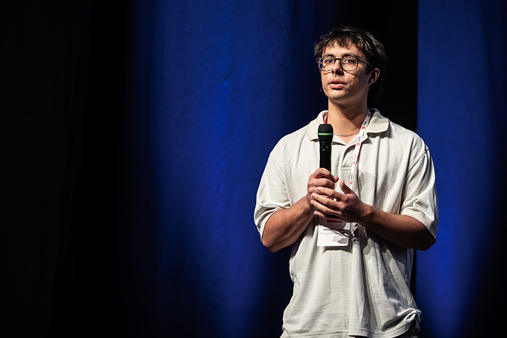

I am a Ph.D. student at Clemson University, advised by Dr. Rong Ge. My research interests are in runtime systems, heterogeneous memory management, and distributed simulation. I enjoy low-level work with heterogeneous systems. In the past I have worked with GPUs, custom Linux kernels, and NVIDIA drivers to study and improve how memory moves between CPU and accelerator.
I am currently an intern at Argonne National Laboratory (advised by Dr. Swann Perarnau), working on Timeweave, a distributed memory runtime for PDES and ABMS suites.
Distributed Shared Timestamped Memory (DSTM) is a distributed memory runtime for parallel discrete event simulation and agent-based modeling. View DSTM on GitHub
